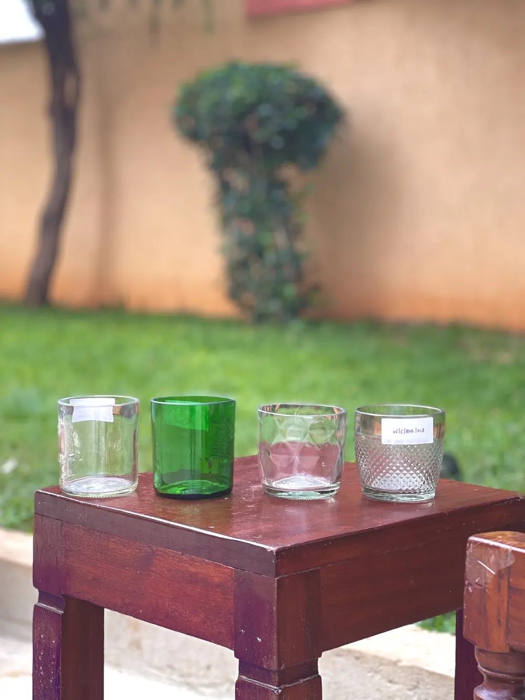
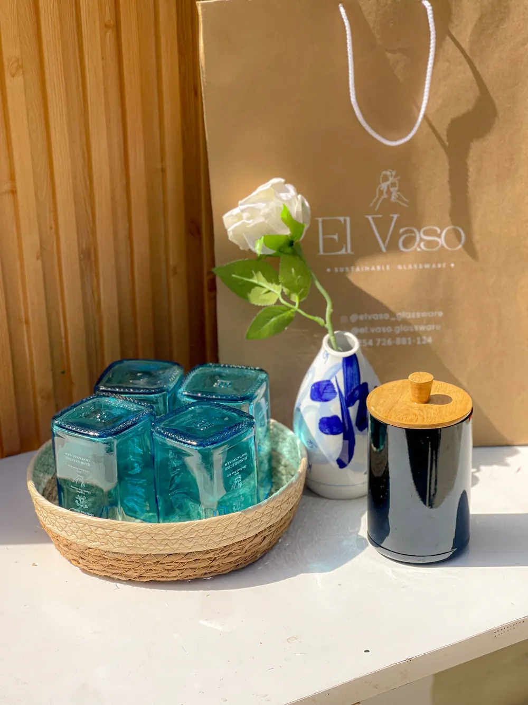
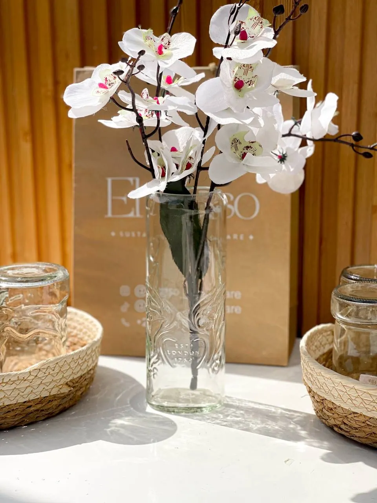
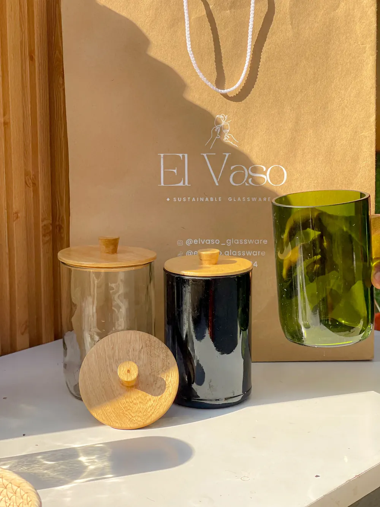
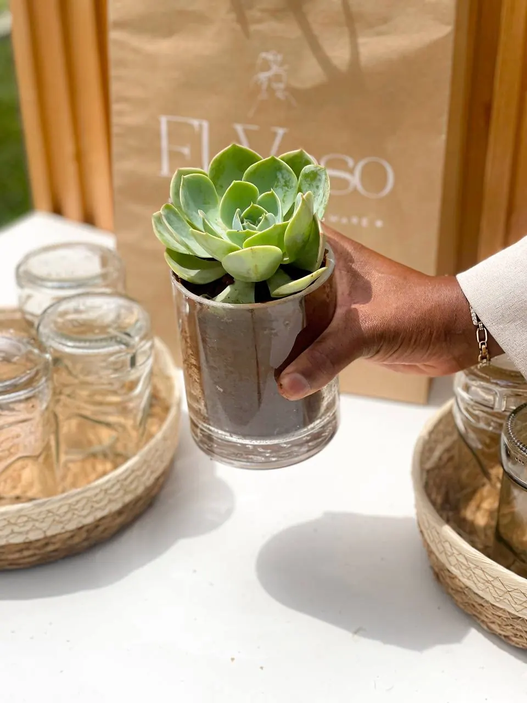
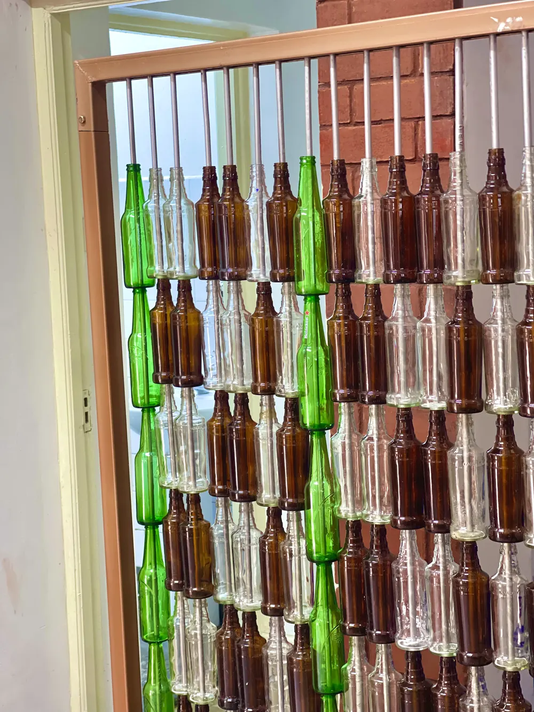
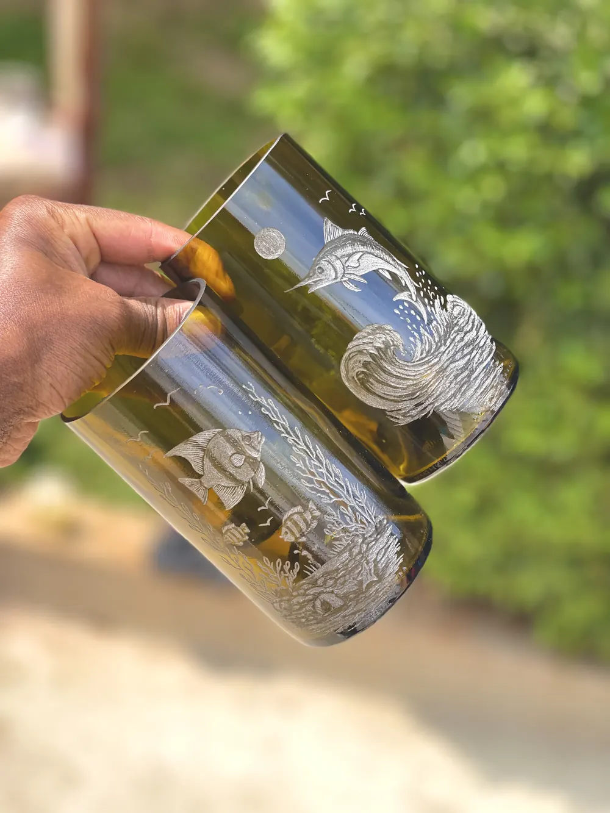
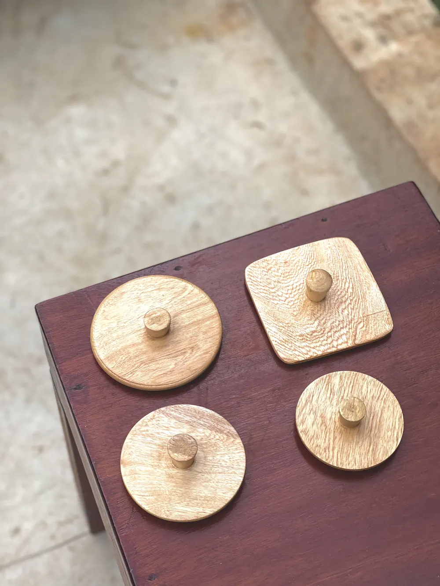
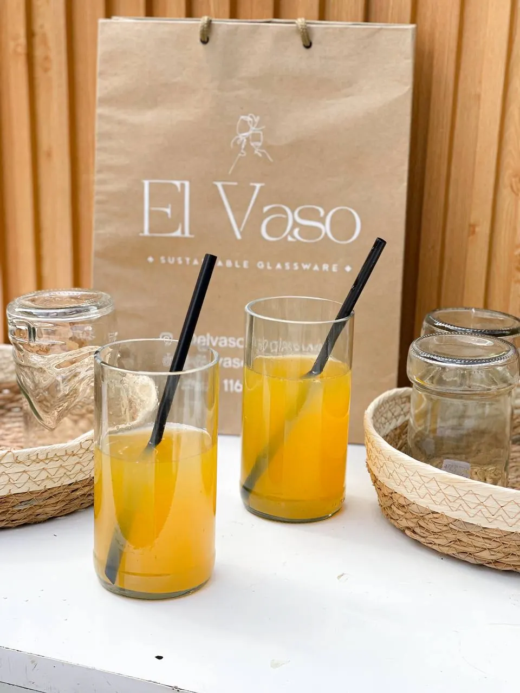
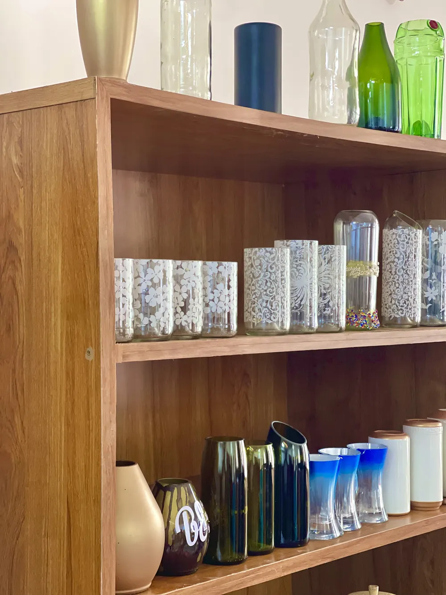

Glassware
Tumblers for every day
Sturdy drinking glasses in clear, green and amber, each with its own shape from the bottle it came from.
Handmade · Upcycled · Kenyan craft
We collect discarded glass bottles in Nairobi and cut them into glasses, vases, jars and planters by hand.

Made in Nairobi from collected bottles
At El Vaso, we see potential in what others discard. Our artisans transform used bottles into thoughtful pieces that feel at home in any space.
Our collection

Tumblers for every day
Sturdy drinking glasses in clear, green and amber, each with its own shape from the bottle it came from.

Centrepieces with character
Tall and bud vases for fresh stems or dried arrangements, at home or at your next event.

Bamboo lids, kitchen ready
Canisters for coffee, sugar, cotton buds or candles, finished with hand-turned bamboo lids.

Small green corners
Glass pots for succulents and herbs, so the roots and soil become part of the look.

About El Vaso
Nairobi throws away thousands of glass bottles every week. We see each one as raw material. Our team collects them, sorts them by colour and thickness, and gives them a second life as glassware made to be used daily.
Doing it this way keeps glass out of landfill and creates steady, skilled work for people in our community.
A Kenya where waste glass is valued, not dumped.
To make beautiful, useful pieces from discarded bottles while growing local skills and livelihoods.
The craft
Bottles come in from partners and neighbours. We wash them, peel the labels and sort by colour.
Each bottle is scored, separated and sanded until every rim is safe and silky to the touch.
We add engraving, paint or bamboo lids, then check every piece before it leaves the workshop.


The El Vaso difference
No two bottles are the same, so no two pieces are either.
Thick recycled glass and smooth, polished rims for daily use.
Engraving, logos and colours for gifts, homes and businesses.
Every order supports skilled jobs and cleaner neighbourhoods in Nairobi.

For gifts, events and businesses
From custom gifts to hospitality collections, let’s create something beautiful together.
Visit us
Drop by our Nairobi showroom to browse the shelves, hold the glass and talk to the people who make it. Bring your empties too.

Tell us what you are looking for, from a single vase to glassware for a whole restaurant, and we will get back to you on WhatsApp.